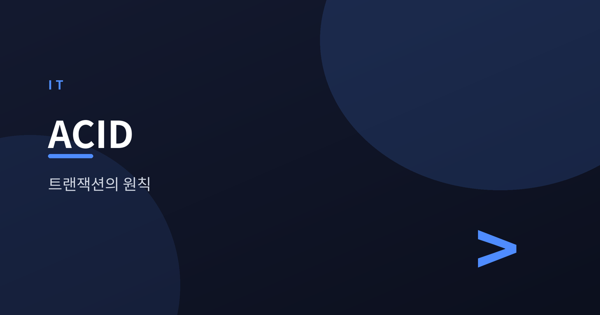
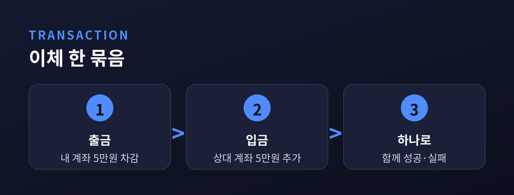
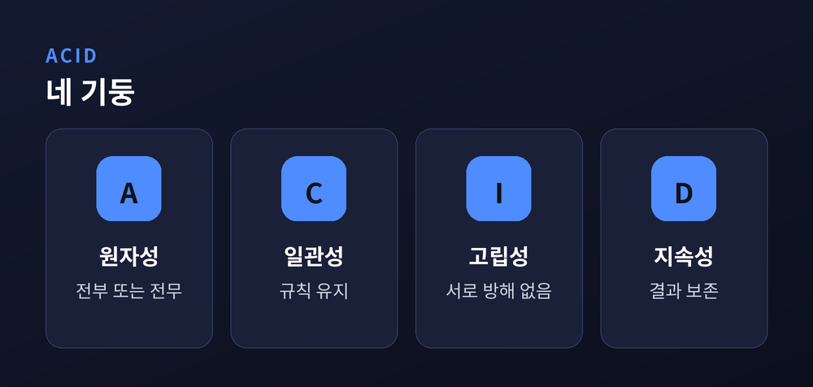
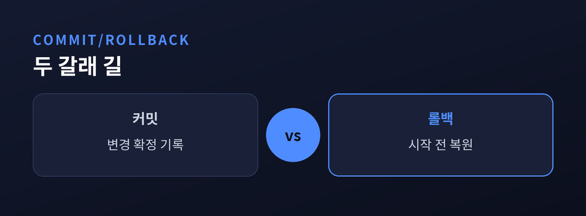
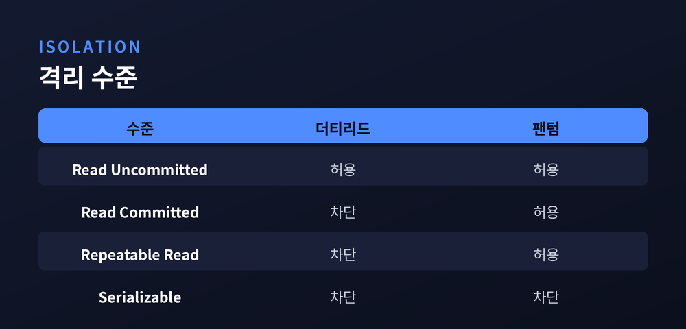

데이터베이스는 어떻게 정합성을 지키나

이번 글에서는 데이터베이스의 트랜잭션과 ACID를 정리해 보겠습니다.
계좌에서 돈이 빠졌는데 상대에게는 들어오지 않는다면, 우리는 그 시스템을 믿지 못합니다. 데이터베이스는 이런 어긋남을 막기 위해 오래도록 다듬어 온 원칙을 가지고 있습니다.
용어는 낯설지 몰라도 개념은 어렵지 않습니다. 하나씩 짚어 보겠습니다.
트랜잭션은 하나로 묶인 작업의 단위입니다. 여러 동작이 있어도, 논리적으로는 한 덩어리로 다룹니다.
은행 이체를 떠올려 보시면 됩니다. 내 계좌에서 5만 원을 빼고, 상대 계좌에 5만 원을 더합니다. 겉으로는 두 동작이지만, 실제로는 하나의 일입니다.
둘 중 하나만 성공하면 곤란합니다. 돈이 사라지거나, 없던 돈이 생깁니다. 그래서 이 둘은 함께 성공하거나 함께 실패해야 합니다.
트랜잭션은 바로 이 "함께"를 보장하는 약속인 셈입니다.

트랜잭션이 지켜야 할 성질을 네 글자로 모은 것이 ACID입니다.
원자성(Atomicity)은 전부 되거나 전부 안 되거나입니다. 절반만 반영되는 상태를 허용하지 않습니다.
일관성(Consistency)은 규칙을 어기지 않는 상태로만 넘어간다는 뜻입니다. 잔액이 음수가 되면 안 된다는 제약이 있다면, 트랜잭션 전후로 그 규칙이 지켜집니다.
고립성(Isolation)은 동시에 실행되는 작업들이 서로를 방해하지 않도록 하는 성질입니다. 여러 사람이 같은 데이터를 만져도, 각자는 홀로 작업하는 듯 느낍니다.
지속성(Durability)은 한 번 성공한 결과는 사라지지 않는다는 약속입니다. 정전이 나도, 저장이 끝난 데이터는 남습니다.
이 넷이 함께 있어야 우리는 데이터를 믿을 수 있습니다.

트랜잭션의 끝에는 두 갈래 길이 있습니다.
커밋(Commit)은 "여기까지 확정합니다"라는 선언입니다. 커밋된 변경은 정식으로 기록되고, 다른 작업에서도 보이게 됩니다.
롤백(Rollback)은 그 반대입니다. 중간에 문제가 생기면, 시작 전 상태로 되돌립니다. 아무 일도 없던 것처럼 처리합니다.
이체 도중 입금 단계에서 오류가 났다고 해 봅시다. 이미 빠져나간 출금은 롤백으로 취소됩니다. 어중간한 결과가 남지 않습니다.
원자성은 대개 이 커밋과 롤백으로 실현됩니다. 개념이 곧 동작으로 이어지는 지점입니다.

혼자 쓰는 데이터베이스라면 고립성은 고민거리가 아닙니다. 문제는 여럿이 동시에 같은 데이터를 다룰 때 생깁니다.
이때 세 가지 이상현상이 알려져 있습니다.
더티 리드(dirty read)는 아직 커밋되지 않은 값을 읽어 버리는 경우입니다. 그 값이 곧 롤백되면, 나는 없던 정보를 본 셈이 됩니다.
반복 불가능 읽기(non-repeatable read)는 같은 행을 두 번 읽었는데 값이 달라지는 상황입니다. 사이에 누군가 그 행을 바꾼 것입니다.
팬텀 리드(phantom read)는 조건에 맞는 행의 개수가 두 조회 사이에 달라지는 현상입니다. 없던 행이 유령처럼 나타납니다.
막으려면 잠금과 검사가 늘어납니다. 그만큼 성능은 대가를 치릅니다.
그래서 데이터베이스는 고립성을 몇 단계로 나눠 고를 수 있게 했습니다.
가장 느슨한 것이 Read Uncommitted입니다. 커밋 전 값까지 읽어, 더티 리드가 일어날 수 있습니다. Read Committed는 커밋된 값만 읽어 더티 리드를 막습니다. Repeatable Read는 한 번 읽은 값이 트랜잭션 내내 유지됩니다. 가장 엄격한 Serializable은 마치 하나씩 차례로 실행한 것과 같은 결과를 보장합니다.
수준이 높아질수록 이상현상은 줄어듭니다. 대신 동시에 처리할 수 있는 양이 줄고, 대기와 충돌이 늘어납니다.
정답은 하나로 정해져 있지 않습니다. 정확성이 절대적인 금융 거래라면 엄격한 쪽을, 약간의 오차를 감내할 수 있는 조회라면 느슨한 쪽을 택합니다.
"안전과 속도는 대개 반대 방향을 봅니다." 그 사이에서 균형점을 찾는 일이 실무의 몫입니다.

정리하면 이렇습니다. 트랜잭션은 여러 동작을 하나로 묶고, ACID는 그 묶음이 지켜야 할 약속입니다. 커밋과 롤백이 원자성을 실현하고, 격리 수준은 안전과 성능 사이의 선택지를 줍니다.
데이터베이스가 조용히 지켜 주는 이 원칙들 덕분에, 우리는 이체 버튼을 누르고 나서 결과를 다시 확인하지 않아도 됩니다. 그 믿음의 밑바탕이 무엇인지 알고 나면, 익숙한 화면 뒤의 설계가 조금 달리 보이실 것입니다.